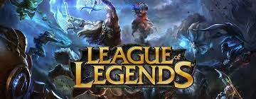

League of legends
Oh, hallo. Schön, dich hier zu treffen! Es hat eine Weile vor sich hin geköchelt, aber endlich können wir dir in 11.13 ein ganzes Festmahl servieren. Dieser Patch bezieht sich größtenteils auf die Systeme, wobei die meiste Arbeit in die Verringerung
der Beweglichkeit floss. Kurz gesagt verringern wir die Beweglichkeit an Stellen, an denen sie überhandgenommen oder sogar die vorgesehenen Grenzen überschritten hat. Außerdem wollen wir die Splitpush-Strategie verbessern und diese Spielweise
fördern, um die Endphase des Spiels insgesamt abwechslungsreicher und spannender zu gestalten. Apropos essen, dieser Patch enthält auch eine Mini-Überarbeitung von Tahm Kench! Er bekommt aufpolierte Fähigkeiten sowie neue Grafikeffekte
und Zungenattacken. Guten Appetit, mein Freund. Bis zum nächsten Patch! Nimm dieses Portal zu den TFT-Patchnotizen, um zu erfahren, welche TFT-Champions überarbeitet wurden, welche Änderungen wir an der Spielbalance durchgeführt haben,
und vieles mehr! Tricia „mom cat“ Tan
In diesem kleineren Patch konzentrieren wir uns auf Champion-Anpassungen (in Patch 11.13 wird es dann jede Menge Änderungen an den Systemen geben). In diesem Sinne schenken wir Aphelios und einigen seiner unpopulären Waffenkombinationen etwas
Liebe und schwächen Profispiel-Ausreißer ab (Renekton, Kai’Sa). Dann richten wir das Rampenlicht auf den allseits beliebten, definitiv vertrauenswürdigen und definitiv violetten Arzt. Er selbst wirkt wie neugeboren, aber wir sind uns nicht
sicher, ob man das auch von seinen Patienten sagen kann. Wenn Mundo dich nicht erwischt, sehen wir uns bei den nächsten Patchnotizen! Nimm dieses Portal zu den TFT-Patchnotizen, wo Choncc bereits im Pool feiert. Tricia „mom cat“ Tan Hanna
„shio shoujo“ Woo
